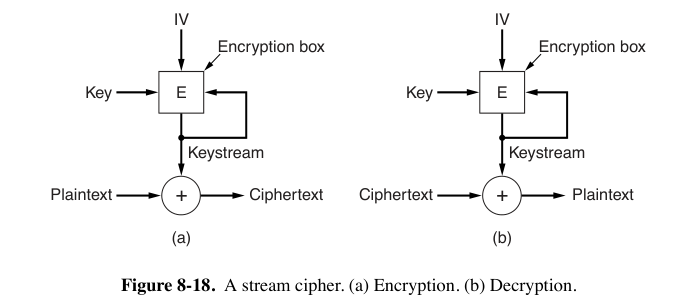

8: Network Security¶
约 3724 个字 预计阅读时间 19 分钟
- 8.1 将网络安全原则，略过
- 8.2 范围表上说不考，略过
- 8.3 讲 Firewall，也略过吧
8.4 Cryptography¶
-
密码学基础术语
- 注意 code 与 cipher 的区别
- cipher（密码）是一种字符到字符或位到位的转换，不考虑消息的语言结构。
- code（代码）是用一个词替换另一个词
- encrypt（加密）
- plaintext（明文）：需要被加密的信息
- key（密钥）：一个用于转换的参数化的函数。加密密钥与解密密钥不一定一致。
- ciphertext（密文）：加密的结果
- intruder：入侵者
- 被动入侵者监听信道，主动入侵者向密文注入自己的信息或者篡改有效信息
- 使用\(C = E_K(P)\)来表示使用密钥\(K\)对明文\(P\)进行加密得到密文\(C\)。同样，\(P = D_K(C)\)表示对\(C\)进行解密以再次得到明文。
- Kerckhoffs原则：所有算法必须是公开的；只有密钥是秘密的。
- 注意 code 与 cipher 的区别
-
密码学两个基本原则
- 消息必须包含一些 redundancy（冗余）
- 否则即使被攻击者注入了无效信息，也当作有效信息
- 需要某种方法来防止 replay attacks（重放攻击）
- 攻击者可能通过重复之前发送的有效消息造成干扰
- 消息必须包含一些 redundancy（冗余）
-
substitution ciphers（替换密码）
- Caesar cipher（凯撒移位）
- 密文字母表被k个字母移位
- 举例，移3位：a变为D，b变为E，c变为F，...，z变为C
- 这种字母之间一一映射的系统称为 monoalphabetic substitution cipher（单字母替换密码）
- 密文字母表被k个字母移位
- 可以利用自然语言的统计特性破解。
- 例如digrams（两字母组合）、trigrams（三字母组合）
- Caesar cipher（凯撒移位）
-
transposition ciphers（换位密码）
-
columnar transposition：按列换位，以列为单位打乱位置，但不改变字母本身。
- 密钥的目的是对列进行排序，第一列位于密钥字母中最接近字母表开头的位置，依此类推。如下图的密钥
MEGABUCK中，最靠近字母表开头的是A，因此把A对应的列换到第一列。
- 密钥的目的是对列进行排序，第一列位于密钥字母中最接近字母表开头的位置，依此类推。如下图的密钥
-
根据字母出现频率可以判断使用的是换位密码，猜测一个可能的明文短语并推测双字母集可以确定密钥长度，最后尝试各种列的排序方法。
-
-
One time pad 范围表上说不考，这里略过
{kind=link}
8.5 Symmetric-key Algorithms¶
-
block cipher（分组密码）：将n位的明文块作为输入，并使用密钥将其转换为n位的密文块。
-
substitution 和 transposition 可以通过电路硬件实现。
- P-box（Permutation 置换）：通过接线实现置换
- S-box（Substitution 替换）：P-box加上编解码器，输入输出一一对应
- product cipher（乘积密码）：通过 cascade 实现。
- 通过多个较小的 S-box 来近似较大的 S-box，S-box 越大硬件实现越复杂。
- 输入和输出长度 k 的常见值是256，至少有20个物理阶段；如果改用软件实现，通常会有至少8次的 iteration（或者称为 rounds）
{kind=link}
8.5.1 DES¶
-
DES (Data Encryption Standard)
-
加密方法大致如上图 (c)
- 明文（以二进制形式）被分成64位的单元，每个单元通过在16轮连续的轮次中，使用56位密钥进行参数化的 permutation 和 substitution 来单独加密。
- 其实DES是一个单表替换密码，使用64字符密码表
- 明文（以二进制形式）被分成64位的单元，每个单元通过在16轮连续的轮次中，使用56位密钥进行参数化的 permutation 和 substitution 来单独加密。
-
triple DES
- 同时使用两个56位密钥来增加密钥长度，总共有112位的密钥
- 使用加密-解密-加密，将两个密钥设为相同的值
{kind=link}
8.5.2 AES¶
- AES (Advanced Encryption Standard)
- 最终采用的具体实现方法称为 Rijndael
- 仍然是 substitution、 permutation 以及 multiple rounds 的结合
- Rijndael支持从128位到256位的 key length 和 block size，length of steps 为32位。
- AES有两种变体：128位分组和128位密钥，以及128位分组和256位密钥。
- 对于128位密钥和128位分组，number of rounds 为10，而对于最大的密钥或分组，轮数增加到14。
- DES 是 bit oriented 的，因此软件实现速度较慢；而AES操作以整个字节为单位。
8.5.3 Cipher Modes¶
-
ECB mode（Electronic Code Book mode，电子密码本）
- AES与DES本质上都是 monoalphabetic substitution cipher
- 每当相同的明文块进入前端时，相同的密文块就会从后端输出。这个性质可以用于破解。
- 使用DES加密长明文的最直接方法是将其分解为连续的8字节（64位）块，并使用相同的密钥一个接一个地加密它们。如果需要，最后一个明文块会被填充到64位。
- AES与DES本质上都是 monoalphabetic substitution cipher
-
CBC mode（Cipher Block Chaining mode，密码分组链接）
- 每个明文块在加密之前与前一个密文块进行异或操作。
- 例如，第一个块与一个随机选择的IV（Initialization Vector，初始化向量）进行异或，IV与密文一起以明文形式传输。
- 相同的明文块不会导致相同的密文块。
- 每个明文块在加密之前与前一个密文块进行异或操作。
-
CFB mode（Cipher Feedback Mode，密码反馈）
- CBC 需要等待整个块到达才能解密。
- CFB 仍然需要初始向量IV。
- 假如说每次加密 64bit，每次移动 1byte，则如果有一次加密出错，只会影响 8byte 的内容。
- 举例：\(C_1 = E_K(IV_{1-8})\oplus P_1\)，\(P_1 = E_K(IV_{1-8})\oplus C_1\)
-
Stream Cipher Mode
- 反复加密IV得到不重复的 keystream
- 绝对不能两次使用相同的IV，会受到 keystream reuse attack 
{kind=link}
{kind=link}
{kind=link}
8.6 Public Key Algorithms¶
- 公钥加密要求每个用户拥有两个密钥：
- 一个 public key，用于加密发送给该用户的消息
- 一个 secret key，用户用它来解密消息
8.6.1 RSA¶
- 加密流程
- 选择两个大素数\(p\)和\(q\)（比如1024位长的素数）。
- 计算\(n = p \times q\)和\(z = (p - 1) \times (q - 1)\)。
- 选择一个与\(z\)互质的数，并称之为\(d\)。
- 找到\(e\)，使得\(e \times d = 1\mod z\)。
- 加密：\(C = P^e\mod n\)，解密：\(P=C^d\mod n\)
- 公钥由\((e, n)\)组成，私钥由\((d, n)\)组成
8.7 Digital Signatures¶
- 接收者可以验证发送者的声称身份。
- 发送者无法在事后否认消息的内容。（nonrepudiation）
- 接收者不可能自己编造消息。
- Symmetric-Key Signatures
- 引入中央权威机构
-
Public-Key Signatures
- A用自己的私钥和对方的公钥，将明文P加密为\(C=E_B(D_A(P))\)，B用自己的私钥和对方的公钥，解密为\(P = E_A(D_B(C))\)
- 如果\(D_A\)泄露，则无法证明消息是A本人发送的。
- 除了RSA之外，还有用Digital Signature Standard (DSS)的，但它太复杂，速度太慢。
-
Message Digests
- 使用Hash functions
- 给定\(P\)，可以计算\(MD(P)\)。
- 给定\(MD(P)\)，不可能找到\(P\)。
- 给定\(P\)，无法找到\(P'\)，使得\(MD(P') = MD(P)\)。
- 即使改变输入的1比特，输出也会非常不同。
- SHA-1 的输入数据为512位块，生成160位的消息摘要。已于2017年破解。
- 生成224、256、384和512位的哈希的版本统称为 SHA-2
- 另外已经有SHA-3了。
- 使用Hash functions
- The Birthday Attack：表格中注为不考。
8.8 Management of Public Keys¶
加密通信之前如何安全地获取服务端的公钥
-
Certificates（证书）：由 CA（Certification Authority）负责公钥认证
-
服务端将自己的信息发给CA，CA给服务器端颁发一个 certificate，并用CA的私钥对整数的SHA-2哈希进行签名，得到 signature block。
-
客户端用CA的公钥解密 signature block，并对 certificate 运行SHA-2，如果解密的结果与 certificate 的SHA-2一致，说明服务端可靠。
-
-
X.509
-
certificate 的格式标准。
-
certificate 使用OSI ASN.1（Abstract Syntax Notation 1）编码，类似于C语言的结构体但更冗长。
- 某人的X.500地址可能是
/C=US/O=MoneyBank/OU=Loan/CN=Bob/，其中C代表国家，O代表组织，OU代表组织单位，CN代表通用名称。- 从 version 3 开始，允许使用DNS names 代替X.500名称
-
-
PKI（Public Key Infrastructures）
- 解决很难找到全世界公认的CA的问题
- hierarchies of CAs
- 最顶层是 root CA
- CA下有若干RA（Regional Authorities）
- chain of trust / certification path：服务端同时提供自己的、RA的、逐层向上的CA的证书，客户端一溜儿检查过去
- 世界范围内运行多个 root CA
- 现代浏览器预装了100多个 root CA的公钥（trust anchors）
- Directories: 证书的存储位置
- 每个用户都存储自己的证书：安全但不便
- DNS
- 专门用于X.509证书查找的 directory servers
- 可以通过X.500地址的属性来查找
- Devocation（吊销）
- 让每个CA定期发布CRL（证书吊销列表），列出其已吊销的所有证书的序列号。
- 由于证书包含过期时间，CRL只需要包含尚未过期的证书的序列号。
- 用户在每次使用证书之前，需要询问CA，以免证书刚刚被吊销。
- CRL的存储位置
- 与证书本身存储在同一处
- CA定期主动推送CRL，并让目录通过简单地删除吊销的证书来处理它们。
- 如果不使用目录来存储证书，CRL可以缓存在网络中的各个地方。
- 与证书本身存储在同一处
- 让每个CA定期发布CRL（证书吊销列表），列出其已吊销的所有证书的序列号。
8.9以后没有精力完成了¶
8.10.1 IPsec¶
-
IPsec (IP security)：网络层加密
- 基于symmetric-key cryptography
- 虽然位于IP层，但是是有连接的。
- IPsec的“连接”称为SA（Security Association，安全关联）。
- SA是两个端点之间的 simplex 连接，并具有与之关联的 security identifier（安全标识符）。
- 如果需要在两个方向上进行安全通信，则需要两个安全关联。
- 安全标识符在安全连接上传输的数据包中携带，并在安全数据包到达时用于查找密钥和其他相关信息。（应该就是下文的security parameters index）
-
IPsec的两种模式
- transport mode
- IPsec头插入在IP头之后。
- IP头中的Protocol字段由TCP改为指示IPsec
- IPsec header 包括 SA identifier、sequence number、payload integrity check。
- tunnel mode
- 包括IP header在内的IP数据包被封装在一个新的IP数据包内部，带有新的IP头。
- 隧道重点需要是 security gateway machine（安全网关），由它负责封装与解封装。
- 可以防止侦听流量模式（或称traffic analysis）
- 缺点是添加了额外IP头，增加了overhead。
- transport mode
-
IPsec的两个组成部分
-
可以添加到数据包中的两个新头。
-
AH（Authentication Header，认证头）
- AH 头不对数据进行加密，因此它主要在需要 integrity check 但不需要保密性时有用。
- 在IPv4中插入在IP头（包括任何options）和TCP头之间；在IPv6中则相当于一个扩展头。
- next header 通常为代表TCP的
6。 - payload length 是AH头中的32位字的数量减去2。
- security parameters index 它由发送方插入，以指示接收方数据库中的特定 record。该 record 包含在此连接上使用的 shared key 等信息。
- sequence number 对在SA上发送的所有数据包进行编号。
- 重传的数据包与原数据包在此处的sequence number不同，以检测 replay attacks。
- 不会 wrap around（回绕），如果所有序列号都用完，则建立新的SA继续通信。
- authentication data 字段长度可变，包含 payload 的数字签名，用于 integrity check。
- 双方在 SA 建立时商议使用的算法
- 此处通常不会使用公钥加密
- 由于IPsec基于对称密钥加密，并且在设置 SA 之前发送方和接收方协商共享密钥，因此使用共享密钥来进行签名计算。
- 也就是说，IPsec 使用 HMAC（Hashed Message Authentication Code）。
- AH 的 integrity check 涵盖了IP头中，在数据包从路由器移动到路由器时不会改变的字段。例如，TTL 不会被涵盖，但IP源地址必须被检查。
-
ESP（Encapsulating Security Payload，封装安全载荷）
- ESP header的内容就是AH中的 security parameters index 和 sequence number。
- ESP header后面可能还跟一个数据加密用的IV，但是不算做header的一部分。
- 将HMAC放在末尾在硬件实现中有一个优势：HMAC可以在比特通过网络接口发送出去时计算，并附加到末尾。
-
-
ISAKMP（Internet Security Association and Key Management Protocol，互联网安全关联和密钥管理协议），处理密钥的建立。基于IKE（Internet Key Exchange，互联网密钥交换）协议。
-
{kind=link}
{kind=link}
8.12.3 Transport Layer Security¶
-
TLS（Transport Layer Security，传输层安全）是SSL（Secure Sockets Layer，安全套接字层）的现行名称。
-
SSL位于传输层与应用层之间，接受浏览器的请求并将它们发送到TCP以传输到服务器。
- 一旦建立了安全连接，SSL的主要工作是处理压缩和加密。
- 当HTTP在SSL上使用时，它被称为HTTPS（Secure HTTP，安全HTTP），尽管它仍然是标准的HTTP协议。
-
我们只讨论SSL3。
-
SSL connection establishment subprotocol
- Alice 向 Bob 发送一个请求，指定她拥有的SSL版本以及她对压缩和加密算法的偏好。它还包含一个稍后要使用的随机数\(R_A\)。
- Bob 从 Alice 支持的各种算法中做出选择，并发送自己的随机数\(R_B\)。
- Bob 发送一个包含其公钥的 certificate。
- 如果这个证书由某个不 well-known 的 authority 签署，Bob 还要发送一个 chain of certificates 用于追溯
- Bob 发送一个 Server Done 消息。
- Alice 选择一个随机的384位 premaster key 并将其用Bob的公钥加密后发送给Bob。
- 此时双方均能计算 session key
- Alice 告诉 Bob 切换到新 cipher
- Alice 发送消息，声明她已完成 establishment subprotocol
- Bob随后确认她的操作
-
SSL 支持多种加密算法
- 使用三重DES（带有三个独立密钥，共168位）进行加密，使用SHA-2进行消息完整性保护
- 使用RC4（带有128位密钥）进行加密，使用MD5进行消息认证。
- RC4是一个经典 Stream Cipher。
- 将128位密钥作为种子，并将其扩展为一个更大的数字，仅用于内部使用。
- 使用这个内部数生成一个密钥流。
- 密钥流与明文进行异或操作，形成密文。
- RC4是一个经典 Stream Cipher。
-
Alice知道Bob是谁，但Bob不知道Alice是谁。
- 因此建立连接后，Bob的第一个消息很可能是请求Alice登录。
-
Data transmission using SSL
- 将来自浏览器的消息分成最大 16KB 的单元。
- 如果启用了数据压缩，将每个单元分别压缩。
- 从两个随机数和 premaster key 派生的密钥与压缩文本连接，结果使用约定的哈希算法（通常是MD5）进行哈希。这个哈希作为MAC（注：此处可能指 message authentication code）附加到每个片段。
- 压缩片段加上MAC随后使用约定的对称加密算法（通常通过与RC4密钥流异或）进行加密。
- 最后，附加一个片段头，并以通常的方式通过TCP连接传输片段。
- 将来自浏览器的消息分成最大 16KB 的单元。
{kind=link}